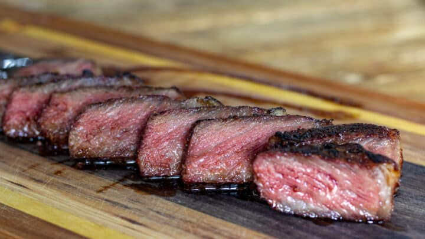

Reverse Seared Ribeye

Description
Reverse seared ribeye is cooked by reaching a target internal temperature to your liking and then quickly searing the steak. This creates the "perfect" steak and you will be able to tell by the smooth transition from pink to brown. For best results, cook your ribeye on the grill for nice and smokey flavor.
Ingredients
- Ribeye 1 1/2 thick cut
- Kosher salt
- Cracked black pepper
Steps
- Use a paper towel to dab the steak and soak any moisture
- Sprinkle kosher salt on all sides of the steak and place in the refridgerator uncovered for at least 24 hours
- Take steak out refridgerator and cook steak on the grill with indirect heat until you reach your desired internal temperature
- Move steak directly over the fire and sear all sides for 1 minute
- Remove steak from grill and let it rest for 10 minutes before cutting